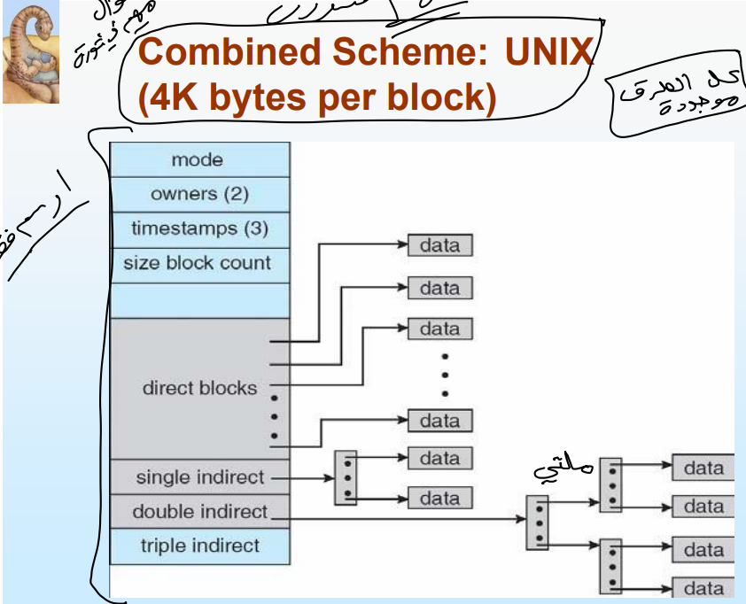
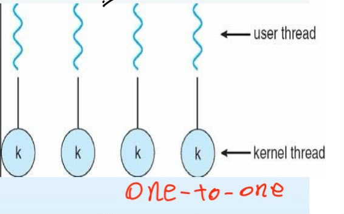
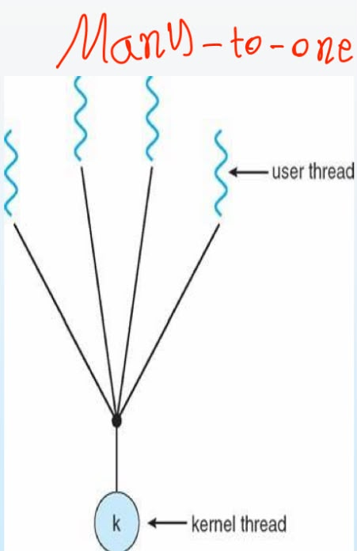
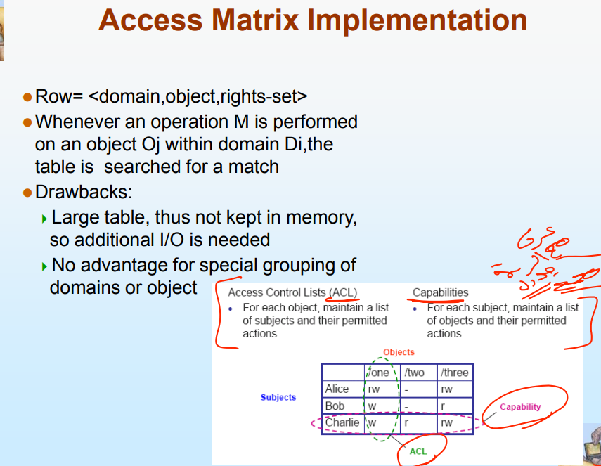
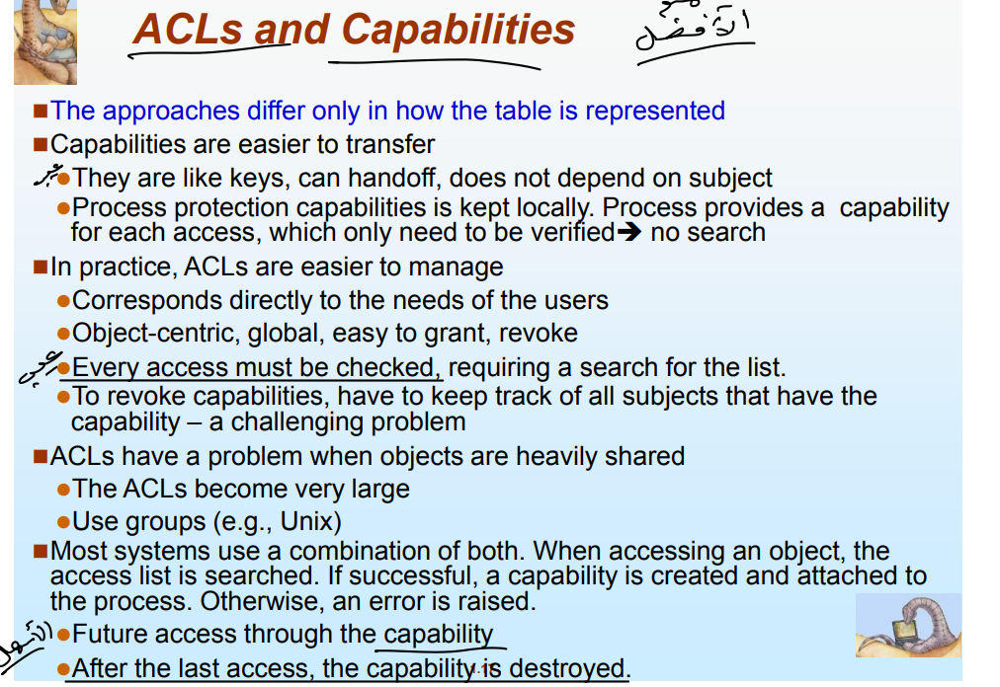

الأسئلة القصيرة - Section B
Q1. Discuss any five services of operating system.
ناقش أي خمس خدمات يقدمها نظام التشغيل.
1. User Interface (UI): CLI, GUI, or Batch.
2. Program Execution: Load a program into memory and run it.
3. I/O Operations: Manage inputs/outputs for running programs.
4. File-System Manipulation: Read, write, create, and delete files/directories.
5. Communications: Exchange information between processes.
2. Program Execution: Load a program into memory and run it.
3. I/O Operations: Manage inputs/outputs for running programs.
4. File-System Manipulation: Read, write, create, and delete files/directories.
5. Communications: Exchange information between processes.
1. واجهة المستخدم (UI): توفير واجهات نصية ورسومية للمستخدم.
2. تنفيذ البرامج: تحميل البرامج في الذاكرة وتشغيلها بنجاح.
3. عمليات الإدخال والإخراج: إدارة الأجهزة والملفات المطلوبة لتشغيل العمليات.
4. التعامل مع نظام الملفات: القدرة على قراءة، كتابة، إنشاء، وحذف الملفات والمجلدات.
5. الاتصالات: تبادل البيانات والمعلومات بين العمليات المختلفة في النظام.
2. تنفيذ البرامج: تحميل البرامج في الذاكرة وتشغيلها بنجاح.
3. عمليات الإدخال والإخراج: إدارة الأجهزة والملفات المطلوبة لتشغيل العمليات.
4. التعامل مع نظام الملفات: القدرة على قراءة، كتابة، إنشاء، وحذف الملفات والمجلدات.
5. الاتصالات: تبادل البيانات والمعلومات بين العمليات المختلفة في النظام.
🖼️

Q2. Differentiate between Threads and Process with diagram.
قارن بين الخيوط (Threads) والعملية (Process) مع الرسم.
- Process: A heavyweight unit of work with its own independent memory space.
- Thread: A lightweight basic unit of CPU utilization that shares resources within the same process.
- Thread: A lightweight basic unit of CPU utilization that shares resources within the same process.
- العملية (Process): وحدة عمل ثقيلة في النظام تمتلك مساحة عناوين وذاكرة مستقلة تماماً.
- الخيط (Thread): وحدة أساسية خفيفة الوزن لاستغلال المعالج وتتشارك الكود والموارد داخل نفس العملية.
- الخيط (Thread): وحدة أساسية خفيفة الوزن لاستغلال المعالج وتتشارك الكود والموارد داخل نفس العملية.
🖼️

Q3. Explain about domain structure with diagram.
اشرح بنية النطاق (Domain Structure) مع الرسم.
A domain is a collection of access rights. Each right is a pair <object-name, rights-set> defining what a process can do. Domains can share rights.
النطاق (Domain) هو مجموعة من حقوق الوصول. يتكون كل حق من زوج مرتب هو <اسم الكائن، مجموعة الحقوق> يحدد العمليات المسموح بها للعملية. يمكن للنطاقات المختلفة أن تشترك في بعض الصلاحيات.
🖼️

Q4. Define different process states with the help of a diagram.
عرّف حالات العملية المختلفة بمساعدة الرسم.
1. New: The process is being created.
2. Running: Instructions are being executed.
3. Waiting: Waiting for an event or I/O.
4. Ready: Waiting to be assigned to a CPU.
5. Terminated: Finished execution.
2. Running: Instructions are being executed.
3. Waiting: Waiting for an event or I/O.
4. Ready: Waiting to be assigned to a CPU.
5. Terminated: Finished execution.
1. جديد (New): العملية قيد الإنشاء حالياً.
2. تشغيل (Running): التعليمات يتم تنفيذها حالياً على المعالج.
3. انتظار (Waiting): العملية تنتظر حدثاً معيناً (مثل انتهاء الإدخال/الإخراج).
4. جاهز (Ready): العملية جاهزة وتنتظر تخصيص المعالج لها لتبدأ.
5. منتهي (Terminated): انتهت العملية تماماً من التنفيذ.
2. تشغيل (Running): التعليمات يتم تنفيذها حالياً على المعالج.
3. انتظار (Waiting): العملية تنتظر حدثاً معيناً (مثل انتهاء الإدخال/الإخراج).
4. جاهز (Ready): العملية جاهزة وتنتظر تخصيص المعالج لها لتبدأ.
5. منتهي (Terminated): انتهت العملية تماماً من التنفيذ.
🖼️

Q5. Briefly discuss about system calls (Why use APIs rather than system calls?).
ناقش باختصار استدعاءات النظام (لماذا نستخدم الـ APIs بدلاً منها؟).
1. Portability: The same API can run on different processor architectures.
2. Simplicity: It relieves the programmer from low-level system call complexities.
2. Simplicity: It relieves the programmer from low-level system call complexities.
1. قابلية النقل (Portability): نفس الـ API يمكن تشغيله على بنيات معالجات مختلفة دون تعديل الكود.
2. السهولة والتبسيط: تريح المبرمج من التعقيدات والتفاصيل العميقة الخاصة بالتعامل المباشر مع استدعاءات النظام.
2. السهولة والتبسيط: تريح المبرمج من التعقيدات والتفاصيل العميقة الخاصة بالتعامل المباشر مع استدعاءات النظام.
🖼️

Q6. Discuss about kernel level threads and its advantages / disadvantages.
ناقش خيوط مستوى النواة (Kernel level threads) ومميزاتها وعيوبها.
- Concept: Threads supported and managed directly by the OS kernel.
- Disadvantage: Slower to create, manipulate, and synchronize compared to user threads.
- Disadvantage: Slower to create, manipulate, and synchronize compared to user threads.
- المفهوم: خيوط يتم دعمها وإدارتها بشكل مباشر بواسطة نواة نظام التشغيل للجدولة الذكية.
- العيب: أبطأ في عمليات الإنشاء، التعامل، والمزامنة مقارنة بخيوط مستوى المستخدم.
- العيب: أبطأ في عمليات الإنشاء، التعامل، والمزامنة مقارنة بخيوط مستوى المستخدم.
🖼️

Q7. What are the main benefits of multithreading?
ما هي الفوائد الرئيسية لتعدد الخيوط (Multithreading)؟
1. Responsiveness: Allows an interactive application to continue running even if part of it is blocked.
2. Resource Sharing: Threads share process memory (code/data) automatically.
3. Economy: Creating and managing threads is much cheaper and faster than full processes.
2. Resource Sharing: Threads share process memory (code/data) automatically.
3. Economy: Creating and managing threads is much cheaper and faster than full processes.
1. الاستجابة (Responsiveness): تسمح للتطبيق التفاعلي بالاستمرار في العمل حتى لو تعطل جزء منه.
2. مشاركة الموارد: تتشارك الخيوط الذاكرة (الكود والبيانات) وموارد العملية تلقائياً دون تعقيد.
3. الاقتصادية: توفير الوقت والجهد؛ لأن إنشاء وإدارة الخيوط أسرع وأرخص بكثير من إنشاء عمليات كاملة.
2. مشاركة الموارد: تتشارك الخيوط الذاكرة (الكود والبيانات) وموارد العملية تلقائياً دون تعقيد.
3. الاقتصادية: توفير الوقت والجهد؛ لأن إنشاء وإدارة الخيوط أسرع وأرخص بكثير من إنشاء عمليات كاملة.
🖼️

Q8. Explain about contiguous allocation in file implementations with diagram.
اشرح التخصيص المتجاور (Contiguous allocation) في تطبيقات الملفات مع الرسم.
Each file occupies a set of consecutive blocks on the physical disk. The directory entry tracks the file using only two parameters: Start block address and Length.
طريقة تخزين تتطلب أن يشغل كل ملف مجموعة من البلوكات المتتالية والمتجاورة خلف بعضها على القرص الصلب. ويتتبعها جدول المجلد (Directory) عبر قيمتين فقط: بلوك البداية (Start) والطول الإجمالي (Length).
🖼️

الأسئلة الطويلة - Section C
Q9. What is access matrix in operating system architecture? Explain about "Copy" and "Owner" rights with diagram.
ما هي مصفوفة الوصول (Access Matrix) في بنية نظام التشغيل؟ واشرح حقوق "النسخ" و"المالك" مع الرسم.
- Access Matrix: A protection model grid where rows are domains, columns are objects, and cells hold access rights.
- Owner Rights: Allows a domain to add or remove rights within that object's column.
- Copy Rights (*): Allows a domain to copy an existing right to another domain within the same column.
- Owner Rights: Allows a domain to add or remove rights within that object's column.
- Copy Rights (*): Allows a domain to copy an existing right to another domain within the same column.
- مصفوفة الوصول: نموذج حماية على شكل جدول؛ تمثل صفوفه نطاقات الحماية (Domains)، وأعمدته كائنات النظام (Objects)، وخلاياه تحتوي الحقوق المسموحة.
- حقوق المالك (Owner): تسمح للنطاق بإضافة حقوق جديدة أو حذف حقوق قائمة في العمود الذي يملكه الكائن.
- حقوق النسخ (*): تسمح للنطاق بنسخ صلاحية معينة ونقلها لنطاق آخر داخل نفس العمود وتتميز بعلامة النجمة.
- حقوق المالك (Owner): تسمح للنطاق بإضافة حقوق جديدة أو حذف حقوق قائمة في العمود الذي يملكه الكائن.
- حقوق النسخ (*): تسمح للنطاق بنسخ صلاحية معينة ونقلها لنطاق آخر داخل نفس العمود وتتميز بعلامة النجمة.
🖼️


Q10. Explain in detail about User level threads and Kernel level threads.
اشرح بالتفصيل خيوط مستوى المستخدم (User level threads) وخيوط مستوى النواة (Kernel level threads).
- User-Level Threads: Managed by user-level libraries, very fast to create and switch, but not integrated with OS scheduling. Includes models like Many-to-One and One-to-One.
- Kernel-Level Threads: Supported directly by the OS, slower to create, but provide true parallel execution and independent scheduling.
- Kernel-Level Threads: Supported directly by the OS, slower to create, but provide true parallel execution and independent scheduling.
- خيوط مستوى المستخدم: تدار بالكامل برمجياً عبر مكتبات الخيوط بدون دعم النواة، وهي سريعة جداً في الإنشاء والتبديل. وتأتي بأنظمة مثل (Many-to-One) أو (One-to-One).
- خيوط مستوى النواة: مدعومة ومجدولة مباشرة من نظام التشغيل، أبطأ في الإنشاء والمزامنة لكنها تقدم توازياً حقيقياً واستقلالية كاملة عند حدوث توقف لأحد الخيوط.
- خيوط مستوى النواة: مدعومة ومجدولة مباشرة من نظام التشغيل، أبطأ في الإنشاء والمزامنة لكنها تقدم توازياً حقيقياً واستقلالية كاملة عند حدوث توقف لأحد الخيوط.
🖼️


Q11. What is RAID? Differentiate between types of RAID (RAID 0, RAID 1) with diagram.
ما هو نظام الـ RAID؟ وقارن بين أنواع الـ RAID (RAID 0, RAID 1) مع الرسم.
- RAID: Redundant Array of Independent Disks, used for data redundancy or performance improvement.
- RAID 0 (Striping): Splits data across disks. High performance, but no fault tolerance.
- RAID 1 (Mirroring): Duplicates identical data on multiple disks. High fault tolerance, but no performance boost.
- RAID 0 (Striping): Splits data across disks. High performance, but no fault tolerance.
- RAID 1 (Mirroring): Duplicates identical data on multiple disks. High fault tolerance, but no performance boost.
- نظام RAID: تقنية لدمج عدة أقراص صلبة معاً لتأمين حماية البيانات أو تحسين الأداء العام للأقراص.
- RAID 0 (التقسيم): يوزع البيانات مجزأة على الأقراص لتسريع الأداء، لكنه يفتقر للحماية والأمان عند تلف أي قرص.
- RAID 1 (المرآة): ينسخ البيانات بشكل متطابق على قرصين صلبين، مما يوفر أماناً وحماية عالية للبيانات ضد الأعطال.
- RAID 0 (التقسيم): يوزع البيانات مجزأة على الأقراص لتسريع الأداء، لكنه يفتقر للحماية والأمان عند تلف أي قرص.
- RAID 1 (المرآة): ينسخ البيانات بشكل متطابق على قرصين صلبين، مما يوفر أماناً وحماية عالية للبيانات ضد الأعطال.
🖼️

نظام الاختبار التفاعلي (69 سؤالاً)
📁 Chapter 4: File-System Implementation
Combined Scheme: UNIX (4K bytes per block) | المخطط المركب في يونكس
نظام ذكي يجمع كل طرق تخصيص المساحة للملفات في هيكل واحد يعتمد على الـ inode:
- Contains metadata: mode, owners (2), timestamps (3), size block count. يحتوي الجزء العلوي على البيانات الوصفية للملف: الصلاحيات، المالك، التوقيت، وحجم البلوكات.
- Direct Blocks المؤشرات المباشرة: تشير مباشرة إلى بلوكات البيانات وتُستخدم للملفات الصغيرة لتسريع الوصول.
- Single Indirect / Double Indirect / Triple Indirect Blocks المؤشرات غير المباشرة (المنفردة، المزدوجة، والثلاثية): تُستخدم للملفات الكبيرة جداً.

📸 المخطط الهيكلي (Image 12)
🧵 Chapter 5: Threads & Concurrency
Multithreading Models | نماذج تعدد الخيوط
- Many-to-One Model نموذج الكثير إلى الواحد: ربط عدة خيوط مستخدم بخيط نواة واحد.
- One-to-One Model (Most commonly used) نموذج الواحد إلى الواحد: ربط كل خيط مستخدم بخيط نواة مستقل تماماً.
- Many-to-Many Model نموذج الكثير إلى الكثير: ربط مجموعة من خيوط المستخدم بمجموعة مساوية أو أقل من خيوط النواة.

📸 رسومات نماذج الخيوط - الجزء الأول (Image 5-1)

📸 رسومات نماذج الخيوط - الجزء الثاني (Image 5-2)
Thread Cancellation | إلغاء وإنهاء الخيوط
- Asynchronous cancellation: Terminates the target thread immediately. الإلغاء غير المتزامن: يتم فيه إنهاء الخيط المستهدف فوراً وبشكل مفاجئ.
- Deferred cancellation: Allows the target thread to periodically check if it should terminate. الإلغاء المؤجل: إنهاء مرن وآمن، حيث يُعطى الخيط فرصة ليفحص بنفسه دورياً ويغلق بسلام.
🔒 Chapter 6: Protection & Security
Access Matrix Implementation | تنفيذ مصفوفة الوصول
- Row = <domain, object, rights-set> يمثل كل صف في الجدول النطاق، والكائن المراد الوصول إليه، ومجموعة الحقوق المتاحة له.
- Whenever an operation M is performed on an object Oj within domain Di, the table is searched for a match. عند تنفيذ أي عملية على أي كائن داخل نطاق معين، يقوم النظام بالبحث داخل مصفوفة الوصول للتحقق من وجود الصلاحية المسموحة.
⚠️ Drawbacks (العيوب الأساسية):
- 1. Large table, thus not kept in memory, so additional I/O is needed.
- 2. No advantage for special grouping of domains or object.

📸 جدول تنفيذ المصفوفة (Image 13)
ACLs and Capabilities | قوائم التحكم والقدرات
The approaches differ only in how the table is represented.
🔑 Capabilities (القدرات):
- Capabilities are easier to transfer: They are like keys, can handoff, does not depend on subject.
- Process protection capabilities is kept locally. Process provides a capability for each access, which only need to be verified -> no search.
📝 Access Control Lists (ACL):
- In practice, ACLs are easier to manage: Corresponds directly to the needs of the users.
- Every access must be checked, requiring a search for the list.
- To revoke capabilities, have to keep track of all subjects that have the capability – a challenging problem.
- ACLs have a problem when objects are heavily shared: The ACLs become very large. Use groups (e.g., Unix).
🤝 Combination Approach (النظام الهجين المشترك):
Most systems use a combination of both. When accessing an object, the access list is searched. If successful, a capability is created and attached to the process. Otherwise, an error is raised. Future access through the capability. After the last access, the capability is destroyed.

📸 مقارنة الـ ACL والـ Capabilities (Image 14)